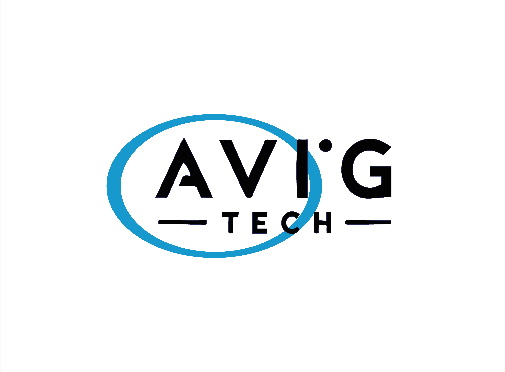

ROS2 HUMBLE
Bienvenido a la documentación oficial de la capacitación de ROS2 Humble.
Esta serie de códigos ha sido compilado y desarrollado por AvigTech.

Contenido
Instalación
Conceptos Básicos
Conexión con dispositivos
Conexión con dispositivos